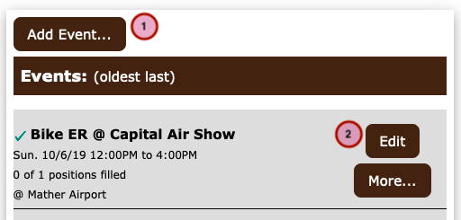
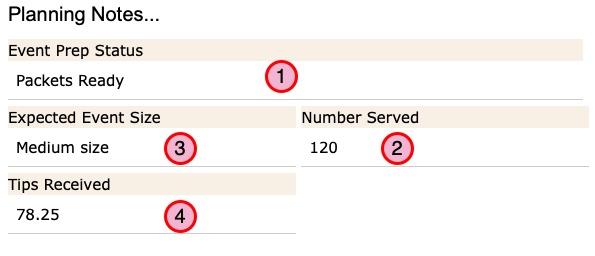
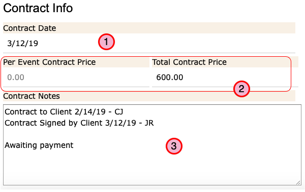
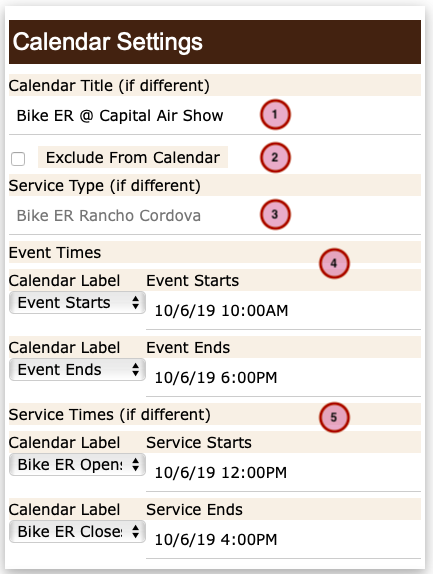
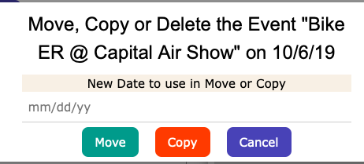
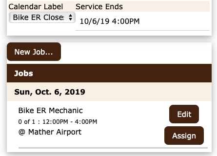

How to manage Event records¶
(Jump to How to Create or Edit an Event)
Event records describe something that is happening on a specific date and (usually) you will want to appear on the Calendar.
- Event records can be accessed and edited from various starting points:
Drectly from the Event item of the main menu
From the associated Activity Record.
From the Edit Event link on the Calendar detail page for the event.
However, you can only create a new Event from an Activity Record. Therefore, you will always start from an Activity record when creating and editing event records.
Note
If you need folks to signup to do some things during your Event, you will need to also create some Job records for the event.
How to Create or Edit an Event¶

Starting from an Activity Record click on the Add Event… button
Or… Click the Edit button to open an existing record.
Note
You can Move or Copy an existing event to another date by clicking the button labeled More…. (See details below)
{kind=link}
The Event Detail page will open.
There is a lot of information in the Event record, so for the purpose of these instructions, we’ve broken it up into a few parts.
Part 1 - The Basics¶

The Activity Title is copied from the Activity Record for reference here. This can’t be changed here.
- Specify the Event Status.
If the event is ready to go, set the status to “Scheduled” and it will appear on the calendar and staff and volunteers will be able to sign up for jobs.
On the other hand, you may set the status to “Pending” or “Cancelled” to keep it private.
Warning
Marking an event as Cancelled will *NOT* cause a notification to be sent to staff or volunteers who have signed up for the event. You will need to do that by cancelling their assignment in the job records.
- Provide a detailed description of the event.
This is a public facing description of the Event that visitors to the site will see in the Calendar. You will want to provide information that the general public will find useful and will hopefully encourage them to attend the event and also to encourage our volunteers to sign up to help.
By default, the description from the Activity is copied there, but you can enter a different, more specific, description if you would like.
Tip
Take a few minutes to work on a decent description. It doesn’t have to be lengthy, but give people an idea why they might want to attend.
The description may use Markdown syntax to create a rich presentation when viewed by visitors. (Or you can just type something.)
- Provide additional information if needed.
This is information that is only seen by staff members. It appears in the Signup listing and the event Roster pages.
This field also supports Markdown syntax.
Part 2 - Location and Contacts¶

- Specify the default Location for the Event.
Select the location where the event will take place from the drop down list. This is the location that visitors will see in the calendar as the location of the event.
For more information on locations See How to Manage Location Records.
In some cases, the places where we will be performing the Jobs associated with an event are spread across a few different locations. In that case, you will be able to select the specific location for each job that you need folks to do so they will know where to show up.
- Choose the Event Manager.
Select the name of a manager from the drop down list. The manager’s contact information will appear in the event Roster and will be the primary point of contact for staff and volunteers for this event.
- Specify Client contact info if needed.
You can either select a client from the drop down list, or enter the information directly.
When you select a Client from the list, the contact info from the Client record is copied to the fields below. You can change any of the contact information that was copied in, but your changes will only apply to this event. They will not be saved to the Contact record.
- Enter a web site address, if any, with additional information about the event. The address will be
displayed as a link in the signup page and calendar detail page.
Part 3 - Event Preparation¶
This section is designed to hold information useful during the planning for an upcoming event and also to the record the number actually served.

“Event Prep Status” is a place for a short note to track your preparation for the event.
- “Expected Event Size” is a place for a short note about how large an event you are expecting
for planning purposes such as “Large”, “Small” etc.
- “Number Served” is a place to record the number of bikes you parked, people you feed, or whatever.
This must be an actual number.
“Tips Received” is a place to record the amount of tips received during the event.
{kind=link}
Part 4 - Contract Info¶
The Contract section is a place to track additional planning information (mostly) for events where you are being paid by the organizers.
Tip
The Contract fields in each Event record “shadow” the matching fields in the event’s Activity record. There is no need to renter the information here unless it’s different for this event.
“Contract Date” is a place to record the date a contract was accepted by the client.
“Per Event Contact Price” and “Total Contract Price” fields provide a place to record the either or both of these values depending on the terms of the contract.
“Contract Notes” is for just that. Anything you’d like to say about the contract.
{kind=link}
Part 5 - The Calendar Settings¶
This section sets the details that are displayed to calendar visitors.

- Enter a Calendar Title if needed.
This is the name of the event that will be displayed in the Calendar. By default the Calendar title will be the same as the Activity title, but you can change it here.
- Check the “Exclude from Calendar” box
If you want to hide the event from the calendar. It will still show up in Signup lists so that people can signup to work the event.
- Change the “Service Type” if you would like.
In the Calendar detail page, the Service Type is used as a page header to give visitors an idea of what kind of service you’re providing.
You may want to change it here to make it clear what you’re doing. For example, “Valet Bike Parking” instead of “Arena Parking”.
- Set the Event Starts and Event Ends
These are the date and time of the start and end of the public part of the event. In other words, when the “doors” open and close to the public.
Also set the Calendar Labels for the start and end times. The labels are used so the times read naturally to site visitors. So, for example, “Doors Open: 7:00 pm - Doors Close: 11:00 pm”.
- Set the Service Times for the event if needed.
The Service times represent the start and end of the service you will be providing. This is used in the cases where you may be opening your service before the event starts to serve folks arriving early or closing after the event ends to serve them as they leave.
{kind=link}
Copying Events¶
{kind=link}
Once you have held a few Events, you can save time if they repeat by making a copy rather than starting from scratch. Also, if the date of an Event changes, you can quickly Move the event to the new date.
When you click the More… button in the event list, a dialog opens which allows you to Move or Copy the event.
Move an Event: The date of the event record (and any jobs) will be changed to the new date you’ve entered.
Warning
If there are people already signed up for the event that you just moved they will not be informed of the change automatically. You’ll need to tell them.
Copy an Event: A new Event record will be created as a duplicate of the current event but with the date specified. Any Jobs associated with the event will be duplicated as well but the staff and volunteer assignments will not. The original Event record and it’s Jobs if any are left unchanged.
Next steps…¶
{kind=link}
Now that you have created an event, you will probably want to create some Job records so people can actually sign up.